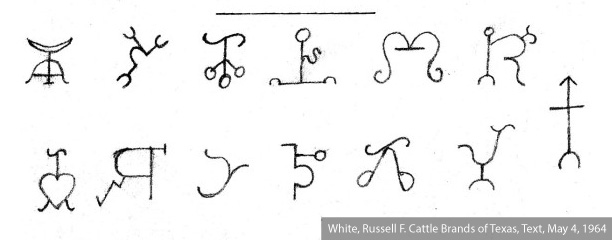
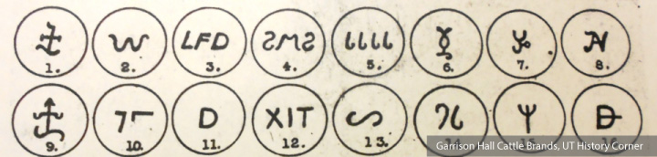
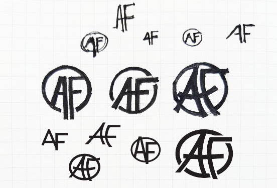
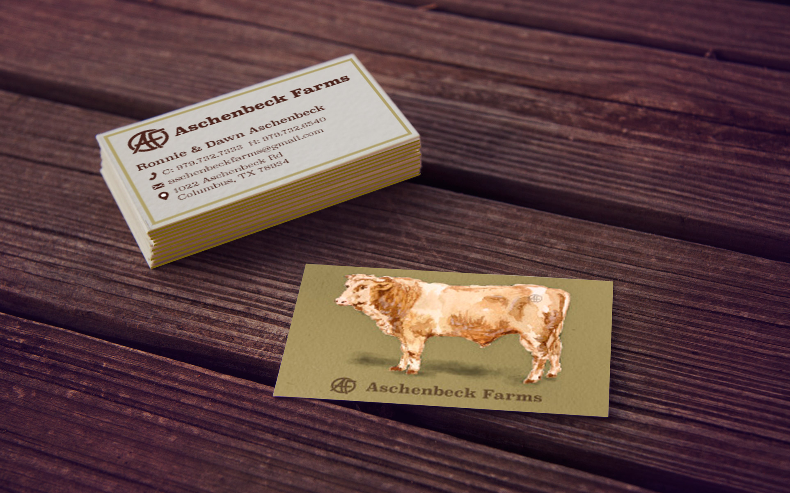

Aschenbeck Farms
Brief
I teamed up with my father to create a cattle brand that could also be used for print purposes.
Scope
Branding & Idenitity
(Literal) Branding
Aschenbeck Farms was in need of (literal) branding. They needed a logo that would adapt to multiple business ventures but also be simple enough to be formed into a cattle brand. Cattle brands have long been associated with ownership and some have even become more prolific than the ranches they represent. Because of its flexibility, the AF logo will be passed down and used for generations to come.
Strategy: The brand needed to have thick enough lines to be made by hand. It was very important to my dad that he get to make it himself.
Creative Solution: The brand needed to have a modern feel to be adaptible to things other than a cattle brand. Clean, bold lines ensured that the brand would translate to paper as well as any other material the brand should find itself on.
RESEARCH
The history of cattle-branding in Texas is a rich one. When herding cattle to auction or to be processed, branding was the easiest way to denote ownership and prevent theft. Before Texas was Texas, vaqueros (the cowboys' Mexican counterpart) were using brands that were pictoral with circular flourishes. (See Picture 1) American cowboys were confused by these and preferred letter-based brands. (See Picture 2) Some of these brands (most notably the 'running w' of King Ranch) would become symbols of the ranches' quality and wealth.
 PROCESS
My dad has been my hardest design client. He wanted the initials 'AF' for Aschenbeck Farms instead of using his own initials (like my grandfather before him had done.) After my dad made the brand, I actually preferred the softer edges that the burn marks created. I modified my original version to match the softer metal brand.
FINAL PRODUCT
It is traditional to let your brands heat up in a fire, but we chose a blow torch because we were impatient and wanted to see our creation in action.

ADDITIONAL USES
New print uses for the logo are always arising. Currently, its being used for business cards and postcards.
